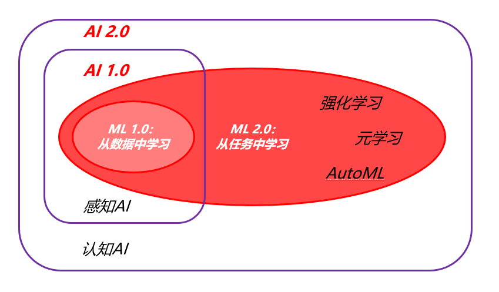

# 机器学习的定义
- 机器学习是一门人工智能的科学，该领域的主要研究对象是人工智能，特别是如何在经验学习中改善具体算法的性能。
- 机器学习是对能通过经验自动改进的计算机算法的研究。
- 机器学习是用数据或以往的经验，以此优化计算机程序的性能标准。
所以说，机器学习是人工智能系统的重要组成部分，人工智能的每次突破，背后的机器学习算法都有改进。机器学习是依据经验数据改进系统自身性能的算法。
是不是和数据有关的问题都可以进行机器学习？
不是。比如：破译密码。机器学习的能力是有上限的。
# 机器学习定义的变化
传统的机器学习定义：learning from data.
最新（大模型时代之前）的机器学习定义：learning from tasks. 包括：
- 多任务学习：multi-task learning.
- 强化学习：reinforcement learning.
- 元学习：meta learning.
- Google AutoML: 自动选模型 + 调参。
机器学习的最终目标是 learning to learn. 即实现 AGI 的目标。

概念区分：
只要是模仿人类智能的技术都是人工智能。
深度学习和传统机器学习的最大差别就是特征提取。深度学习依靠神经网络自动进行特征提取。
现在，两个重要能力是数据工程能力和系统工程能力。业界最急缺的也是这两类人才。模型的创新也离不开这两点。
研一上学期要灌水，下学期就不要灌了。
目前的机器学习是大模型、大数据与大算力的集合。
# 机器学习的发展、问题、模型概述
# 机器学习的基本问题和方法
机器学习是根据给定的训练样本估计某系统输入输出之间的依赖关系，使其可以对未知输出做出尽可能准确的预测。
其可以形式化表示为：
给定从一个固定的分布函数 中提取的 个独立同分布的样本，
# ERM 准则与统计机器学习理论的发展
- 经验风险小不意味着期望风险小。
- 需要建立基于小样本的有效学习方法（统计学习理论）。
# 为什么机器学习是困难的
一个例子：训基于 MoE & Transformer 的多模态模型时，loss 正常下降，但是进行对话效果不好，无法生成正常的对话（模式坍塌）。为什么会发生这种情况？
数据集的量级是 级别的。但对于 个专家， 层 Transformer, 其可能的路径是 级别，因此是模型过于复杂造成的。
当增加数据时，模型中出现新的路径，模型更加复杂，因此训练效果会变差。
# 三类基本的机器学习问题
- 分类问题
- 回归问题
- 概率密度估计问题
# 统计学习的基本方法
- 有监督 / 无监督学习
- 有监督学习
- 无监督学习：聚类、降维、密度估计、生成
- 半监督学习
- 其他学习方法
- 多任务学习
- 强化学习
# 学习模型
# 模型组合
- Boosting: 结合多个低性能学习模型来产生一个强大的分类器组
- Bagging: 结合多个不稳定学习模型以产生稳定预测
- 主动学习 (Active Learning): 主动选择最有利于学习的样本
# Boosting
# Bagging
- 稳定模型：SVM, KNN
- 不稳定模型：决策树，神经网络